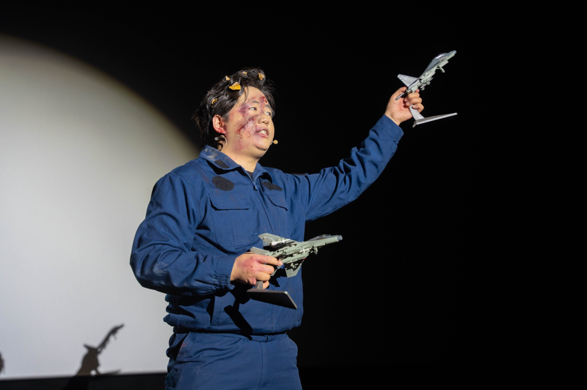
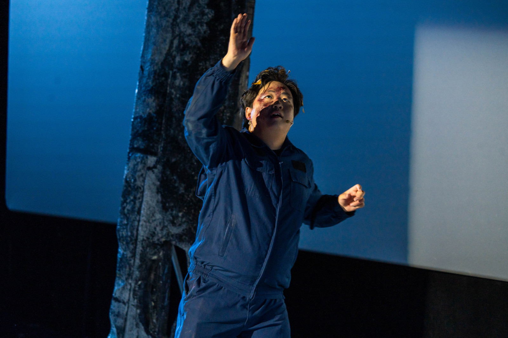
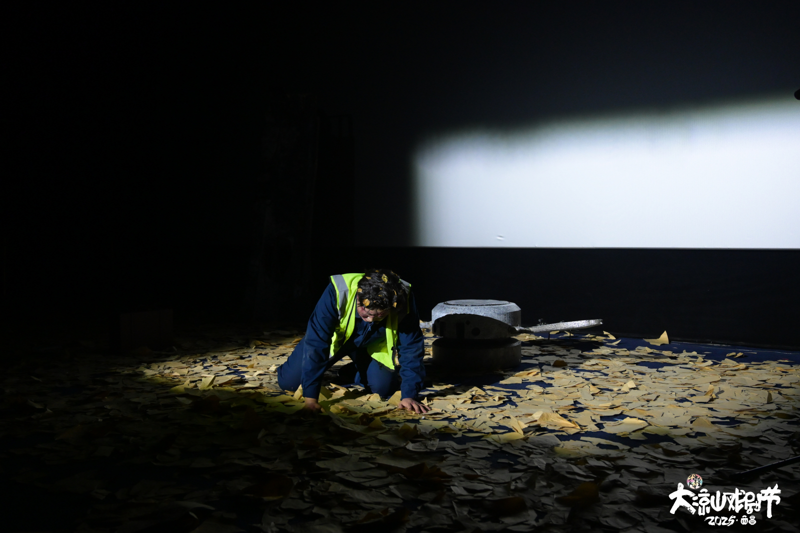
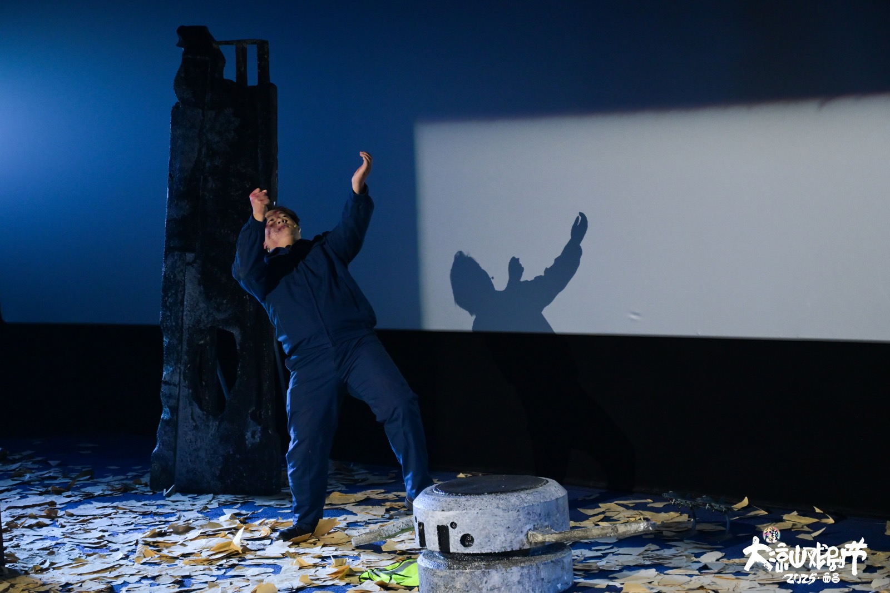

无场次独角话剧 · 2024
面向自我的陈述
THE NARROW GATE
“如果可以的话，我希望你们能拥抱我的灵魂。”
简介
以理查德·罗素未经许可驾驶客机升空并最终坠毁的真实事件为起点。死亡之后，他重新面对自己的一生、媒体的凝视、孤独和所谓自由。
剧本试读 ↗
记录
“戏剧中国”2024年度作品话剧类最佳剧本奖
入围2025躬耕艺术节青年竞演单元并获“躬耕奖”
2025年第七届大凉山国际戏剧节入选剧目
2026深圳城市戏剧季特邀剧目
STILLS / 04
剧照
切换画面 · 点击放大




01
02
03
04
左右滑动 · 点图查看完整画面
←
→